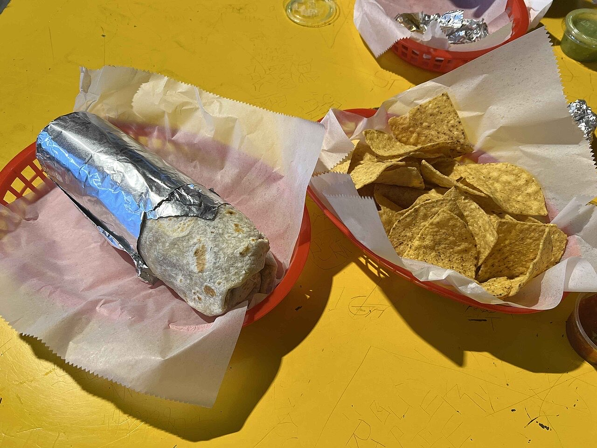
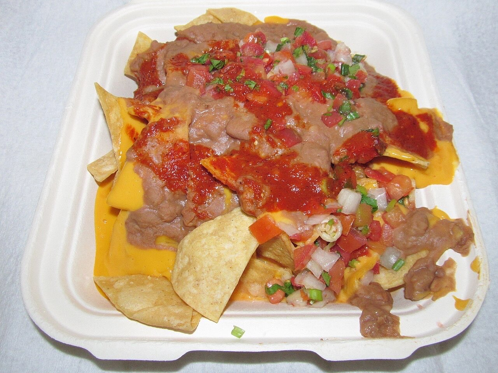
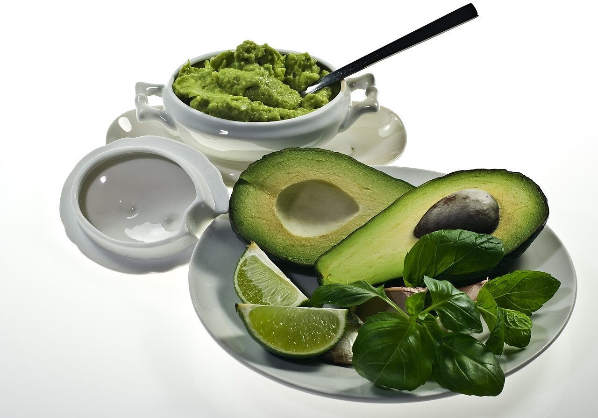

Sabores do México para partilhar à mesa.
Uma opção mexicana sem carne.
4,7★ em 204 avaliações no Google.
O Paco's Kitchen traz a cozinha mexicana à Alameda de São Dâmaso, no centro de Guimarães. Há menu mexicano vegetariano e um espaço amigo de crianças.



Fotografias ilustrativas — no site final usamos as vossas.
Pedido de reserva
Escolha o dia e a hora — o pedido chega por WhatsApp e confirmamos logo.
↑ Assim chegaria a mensagem ao vosso WhatsApp. (Nesta demonstração nada é enviado.)
Onde estamos
Proposta para Paco's Kitchen
Esta página foi feita de propósito para Paco's Kitchen por João Machado, programador web aqui de Guimarães. Inclui:
Eu trato do alojamento e da manutenção. Sem compromisso.